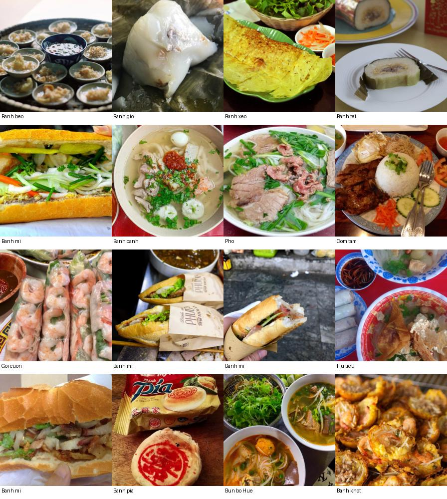
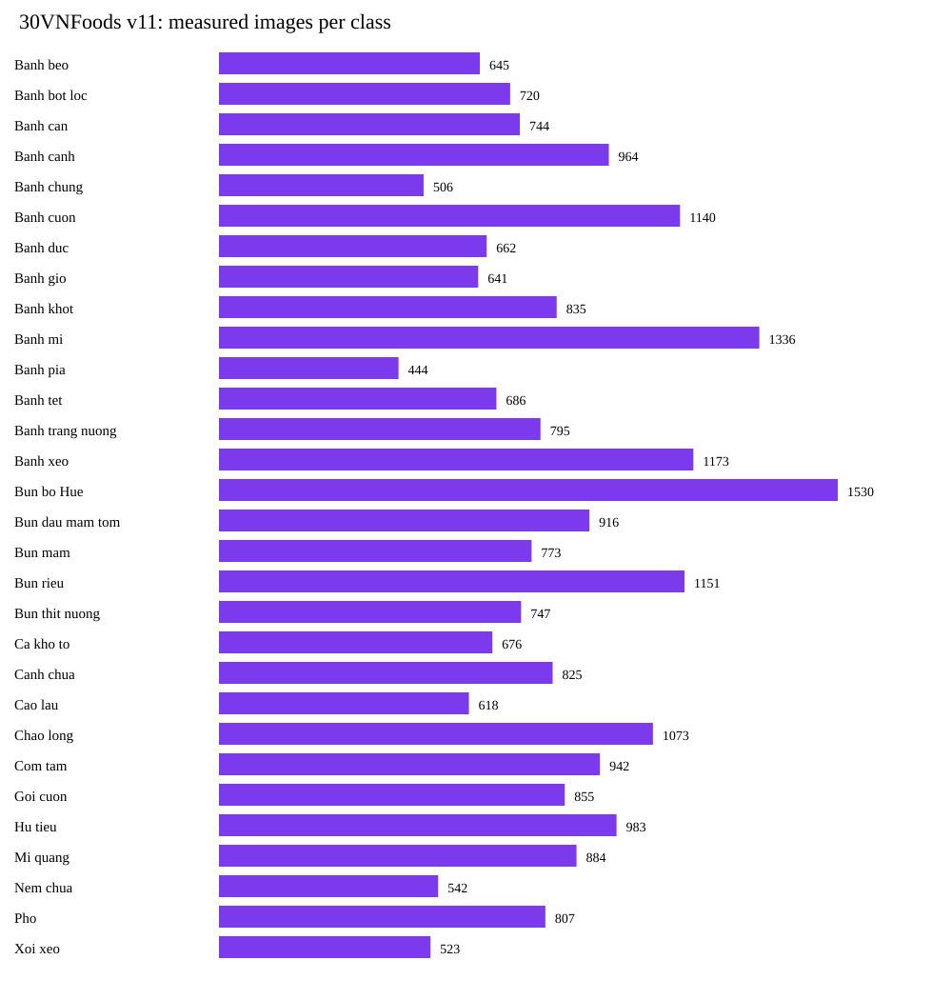
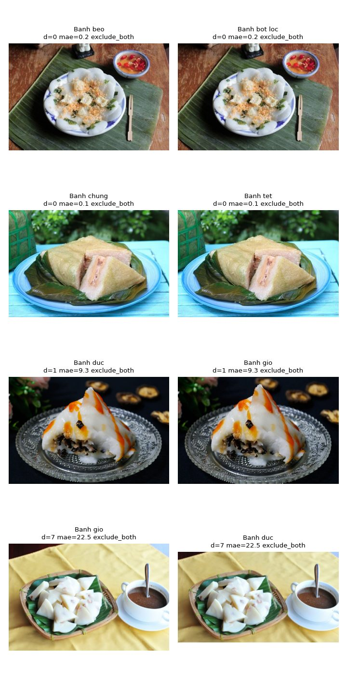
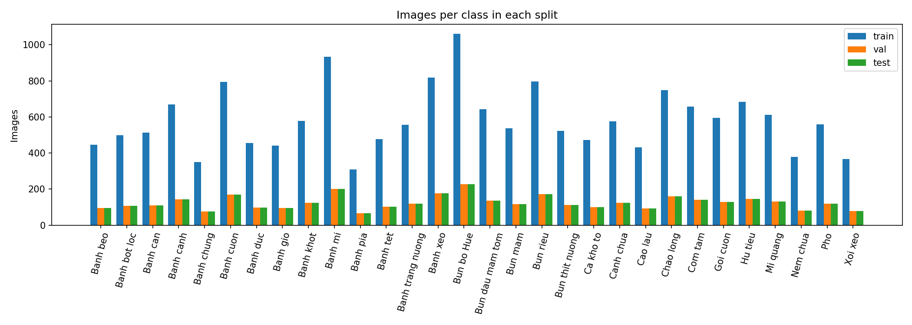
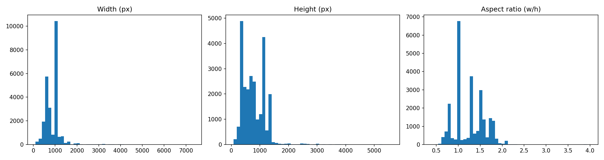
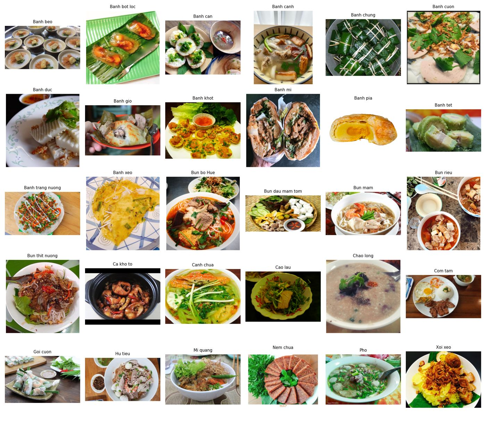
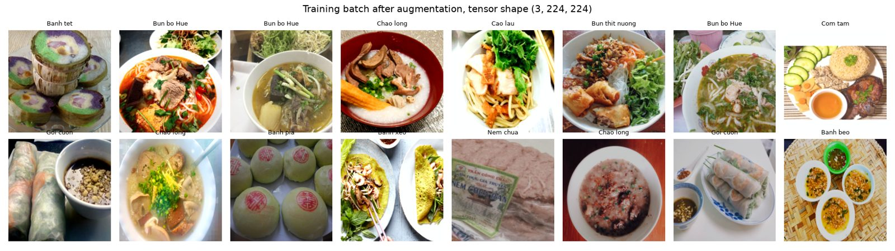
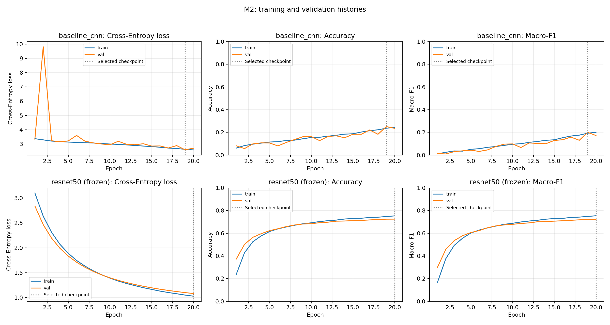

Deep Learning on Large-Scale Data and Specialized Tasks
30VNFoods · M2 Draft · Scratch CNN and frozen pretrained ResNet-50
Assignment Information
Group Members
| # | Full Name | Student ID | GitHub |
|---|---|---|---|
| 1 | Hoang Kim Cuong | 2352145 | @DiamondHoang |
| 2 | Phan Tan Loc | 2352712 | @cspaull |
| 3 | Tran Manh Thang | 2353124 | @Winuim12 |
M2 Draft · updated 26 Oct 2026. EDA and both 20-epoch runs are complete; checkpoint reloads reproduced the saved validation metrics. Full fine-tuning, detailed qualitative analysis, final slides and the mandatory YouTube video remain M3 work. The M2 deadline is 28 Oct 2026, 23:59 GMT+7, unless the LMS states otherwise.
Dataset Proposal
30VNFoods
Vietnamese food recognition across 30 categories, with similar dishes, varied preparation, cluttered backgrounds, and changing lighting.

Dataset Name, Source, Version, and License
30VNFoods
Vietnamese Foods Image Dataset
- Source
- View dataset on Kaggle ↗
- Dataset version
- Kaggle version 11Version used for this project
- Data checked
- 03 Oct 2026Date of the dataset audit
- License
- CC BY-NC-SA 4.0As listed on the Kaggle dataset page. The downloaded package also includes an MIT LICENSE file.Dataset license on Kaggle ↗
Task, Input, and Output Definitions
Image resized and cropped to the standard resolution.
Recognize the Vietnamese dish in each image.
The highest-scoring class is the prediction.
Number of Samples and Annotation Types
Original dataset across 30 Vietnamese food classes. Each image is one sample.
Each image is labeled with one of 30 food names, such as Pho or Banh mi. Images are grouped into folders named after the food; the folder name is used as the label.
Preliminary Distribution Analysis

Bun bo Hue has the most images (1,530), while Banh pia has the fewest (444). The ratio is 1,530 / 444 ≈ 3.45.
Median width is 1,000 pixels and median height is 720 pixels. Widths range from 100 to 7,360 pixels; heights range from 83 to 5,616 pixels. These are separate width and height statistics, rather than a single shared resolution.
Data-Splitting Plan
Proposed class-stratified 70% / 15% / 15% split after cleaning, with seed = 42. Keep all 30 classes.
Split Unit Used to Prevent Leakage
- Check exact copiesKeep one copy when identical images share a label. Exclude identical images with conflicting labels pending manual review.
- Keep similar images togetherThe provisional split keeps automatically flagged near-duplicate candidates in the same set. Review these candidates and source identities before finalizing the split.
- Prevent overlapThis reduces the chance that the model is evaluated on a copy of a training image. Apply augmentation and fit dataset-derived normalization statistics using training data only.
Evaluation Metrics
Calculate F1 for each food class, then average across all 30 classes. Each class has equal weight, including those with fewer images.
Accuracy measures the proportion of correctly classified images. Precision, recall, and F1 are also reported for each food class.
A 30 × 30 matrix shows the true and predicted food classes, revealing which dishes the model commonly confuses.
Baseline Plan
Start with randomly initialized weights. This simple model provides a reference for comparison with the pretrained model.
Each image produces 30 class scores. The class with the highest score is the predicted food name.
Train for up to 20 epochs. Use the same data split as the pretrained model for a fair comparison.
Keep the checkpoint with the highest validation Macro-F1. Report test Accuracy and Macro-F1, along with per-class scores and a confusion matrix.
Planned Pretrained Models
Candidates under consideration; the final model has not been selected.
- EfficientNet-B0
- ResNet-50
- ConvNeXt-Tiny
- ViT-B/16
- MobileNetV3-Large
Compute Estimate
Experiments are planned to run on available local hardware or a cloud GPU environment. Compute requirements will depend on the selected model and training configuration. Training time, memory usage, and storage needs will be estimated through a short trial run before the main experiments.
Problem Statement
Assignment 2 reuses and extends the pipeline skills from Assignment 1 on a larger and more specialized problem. Each group works deeply on one approved track; breadth across all tracks is not required.
Chosen Task Track
Track 1: Image Classification — Fine-grained Vietnamese Food Recognition across 30 categories (30VNFoods).
Given one food photograph, predict its single dish label among 30 categories. The final model input is a 224 × 224 RGB image and the output is 30 logits. Similar dishes, varied preparation, lighting, background clutter and class imbalance make recognition difficult.
Learning Objectives
- Propose, justify, and obtain approval for a dataset and task protocol suitable for specialized deep learning work.
- Adapt an end-to-end pipeline to larger-scale data and task-specific annotations/metrics.
- Compare a simple baseline with at least one pretrained or modern model under a documented fine-tuning strategy.
- Design and interpret at least one controlled ablation or factor experiment.
- Analyze errors, compute cost, and reproducibility for a specialized computer vision or language task.
Dataset Description & EDA
Dataset Proposal & Approval Record
Status: Approved by Instructor (approval date and any conditions to be recorded)
The submitted M1 proposal is kept unchanged in the Dataset Proposal section above. Its split counts were provisional; the audited counts below replace them.
Dataset Audit
Every image of Kaggle version 11 was decoded and checked. The class label is the name of the image's folder. The original Kaggle Train / Validate / Test folders were merged and re-split, because the images were collected from the web (the package lists the source URL of every image) and the same picture can appear in more than one folder.
| Audit step | Images |
|---|---|
| Image files in the package (30 classes) | 25,136 |
| Unreadable / corrupt files | 0 |
| Exact copies (same SHA-256) with the same label — one copy kept | −25 |
| Exact copies with conflicting labels — all copies removed | −79 |
| Near-duplicates with conflicting labels — both removed after manual review (25 pairs) | −50 |
| Images retained for the experiments | 24,982 |
All retained images are RGB (24,854 JPEG, 119 PNG, 7 MPO, 2 BMP). The proposal's provisional total of 25,025 differs
because the duplicate review was not complete at that time; every exclusion is recorded with its reason in
assignment2/data/manifests/audit.csv.
Near-Duplicate Detection and Review
- Candidates: a 64-bit difference hash (dHash) of every image; pairs with Hamming distance ≤ 8 are candidates (1,718 pairs).
- Confirmation: the mean absolute difference of 32 × 32 grayscale thumbnails must be ≤ 30 (on a 0–255 scale). With dHash alone, different dishes with a similar layout (a round plate in the centre) were chained into groups of more than 250 images; the second check reduced the largest group to 9 images.
- Grouping: 480 confirmed same-label pairs form 412 duplicate groups. All images of a group are placed in the same split.
- Manual review: 54 confirmed pairs had different labels. 25 were the same picture filed under two dishes, so both images were removed; 29 were different dishes and both were kept as separate images.

Final Data Split
Split unit: duplicate group. For each class, its groups are shuffled with seed = 42 and assigned to test
until about 15% of the class is reached, then to validation (about 15%); the remaining groups form the training set.
| Split | Images | Share | Smallest class | Largest class |
|---|---|---|---|---|
| Train | 17,486 | 70.0% | 309 | 1,061 |
| Validation | 3,749 | 15.0% | 66 | 228 |
| Test | 3,747 | 15.0% | 66 | 228 |
| Total | 24,982 | 100% |

Class Imbalance and Input Sizes
The largest class (Bun bo Hue, 1,530 original images) is 3.45 times the smallest (Banh pia, 444). Macro-F1 is used as the primary metric so that every class has equal weight. Image sizes vary widely: median 1,000 × 720 pixels, widths 100–7,360 and heights 83–5,616 pixels. 346 retained images have a short side below 224 pixels and are upscaled by the resize step.


Preprocessing
| Stage | Transforms |
|---|---|
| Training only | RandomResizedCrop(224, scale 0.7–1.0), RandomHorizontalFlip, ColorJitter(brightness, contrast, saturation = 0.2) |
| Validation / test | Resize(232), CenterCrop(224) — the evaluation preprocessing of TorchVision ResNet50_Weights.IMAGENET1K_V2 |
| All splits | Convert to RGB, ToTensor, Normalize with ImageNet mean (0.485, 0.456, 0.406) and std (0.229, 0.224, 0.225) |
Normalization uses the constants published with the pretrained weights; no statistic is computed from validation or test data.
The same transforms are used for every model. A batch is a tensor of shape [B, 3, 224, 224] with integer labels 0–29.

Bias and Limitations of the Data
- Images were collected from the web: many are stock or recipe photos with clean backgrounds, which may not represent everyday photos of food.
- Several dishes look alike (e.g. Banh duc and Banh gio, Bun rieu and Bun mam), and the label-conflict review shows that some web images are filed under the wrong dish; further label noise may remain.
- The duplicate check does not detect heavily cropped, rotated or re-photographed copies, and only label-conflicting pairs were reviewed by hand, so some leakage risk remains.
Methodology
Task and model outputs
Predict one of 30 Vietnamese food labels from an RGB image. Each model receives tensors shaped [B, 3, 224, 224] and returns 30 raw logits. Cross-entropy is applied directly to the logits; the largest logit determines the predicted class.
Scratch CNN baseline
The group-implemented CNN has 33 convolutional layers with BatchNorm and ReLU, spatial downsampling, global average pooling, and a two-layer classification head. All weights start from random initialization. This is a substantial scratch baseline; it has 21,249,886 trainable parameters.
Pretrained ResNet-50
TorchVision ResNet-50 uses ResNet50_Weights.IMAGENET1K_V2. Its original output layer is replaced by a linear head mapping 2,048 features to 30 logits. For M2, the backbone is frozen and only the new head is optimized. Backbone BatchNorm running statistics remain fixed, including when the training loop switches the model to training mode.
| Model | Total parameters | Trainable parameters | Updated layers |
|---|---|---|---|
| Scratch CNN | 21,249,886 | 21,249,886 | All layers |
| Frozen ResNet-50 | 23,569,502 | 61,470 | New classification head only |
Preprocessing and pipeline
Training uses RandomResizedCrop to 224 × 224 (scale 0.7–1.0), random horizontal flipping, and brightness/contrast/saturation jitter of 0.2. Validation resizes the shorter side to 232 pixels and center-crops to 224 × 224. Both models use ImageNet mean (0.485, 0.456, 0.406) and standard deviation (0.229, 0.224, 0.225). These fixed constants are not fitted on validation or test images.
The group provides the scratch architecture and orchestration code. ResNet-50, transforms, optimizers and tensor operations come from PyTorch/TorchVision; metric calculations use scikit-learn. The planned M3 controlled study compares the same pretrained ResNet-50 with a frozen backbone versus full fine-tuning.
Experimental Setup
M2 question and comparison
Does a pretrained ResNet-50 with a frozen backbone achieve higher validation Macro-F1 than the scratch CNN under the recorded 20-epoch configurations? Model selection uses the highest validation Macro-F1, with earlier epochs retained on ties. The two M2 configurations differ in architecture, initialization and learning rate; this comparison does not isolate a single factor.
| Setting | Scratch CNN | Frozen ResNet-50 |
|---|---|---|
| Initialization | Random | ImageNet V2 backbone; random 30-class head |
| Optimizer / loss | Adam / cross-entropy | Adam / cross-entropy |
| Learning rate | 0.001 | 0.0001 |
| Epochs / batch size | 20 / 64 | 20 / 64 |
| Weight decay / scheduler | 0 / none | 0 / none |
| Seed / data-loader workers | 42 / 2 | 42 / 2 |
| Early stopping / mixed precision | Not used / not used | Not used / not used |
Both runs use identical reviewed manifests: 17,486 training, 3,749 validation and 3,747 test images, with the same class mapping and augmentation policy. Python, NumPy and PyTorch are seeded. Test predictions have not been evaluated.
Hardware and software
NVIDIA GeForce RTX 5070 Ti (approximately 16 GB VRAM); Python 3.11.13; PyTorch 2.7.1+cu128; TorchVision 0.22.1+cu128; CUDA runtime 12.8. Docker mounts images read-only and preserves results on the host, with a 1 GB shared-memory limit for data-loader workers.
Run provenance and timing
Both experiments record source commit 5d106abab40a6720ebc5874b9a748f01356c965c. Each run saves its resolved configuration, manifest hashes, class mapping, environment details, checkpoint and epoch history. Elapsed times include training, validation, data loading and checkpoint saving inside the epoch loop; initial setup and pretrained-weight downloading are excluded.
Read the environment and reproduction guide. The user-reported full Docker CPU test suite passed 25 tests; a separate GPU calculation and both training runs also completed.
Results
M2 preliminary validation results. These are single-seed results on the validation split, not held-out test scores. Each selected checkpoint was reloaded and reproduced its saved Accuracy and Macro-F1.
| Model | Epoch budget | Selected epoch | Val Accuracy | Val Macro-F1 | Elapsed time |
|---|---|---|---|---|---|
| Scratch CNN | 20 | 19 | 25.10% | 0.2005 | 45m 15s |
| Frozen ResNet-50 | 20 | 20 | 72.45% | 0.7231 | 45m 44s |


Download the comparison CSV · Read the M2 draft report
Recorded run IDs
- Scratch CNN:
20261025T103059Z_a86f4102 - Frozen ResNet-50:
20261025T112235Z_014bbc02
Comparison & Discussion
Frozen ResNet-50 reached validation Accuracy of 72.45% and Macro-F1 of 0.7231, compared with 25.10% and 0.2005 for the scratch CNN. The differences are 47.35 percentage points in Accuracy and 0.5227 in Macro-F1.
The CNN improved through much of training but had fluctuating validation metrics, including a large validation-loss spike at epoch 2; its best validation Macro-F1 occurred at epoch 19. Frozen ResNet-50 improved more smoothly and reached its highest validation Macro-F1 at epoch 20. A fixed 20-epoch budget does not establish that either model has fully converged.
Only 61,470 head parameters were trainable in the frozen model, but the full backbone still computed image features. The measured epoch-loop times were similar: 2,715.15 seconds for the CNN and 2,744.06 seconds for ResNet-50. These totals do not identify a particular performance bottleneck; profiling is deferred until after M2.
Interpretation: the pretrained frozen configuration performs better in these runs. Architecture, initialization and learning rate changed together, so the gain cannot be attributed to one factor in isolation. M3 will compare frozen and fully trainable ResNet-50 while keeping the other factors fixed.
Error Analysis
Initial validation error analysis
The following counts come from the reloaded frozen ResNet-50 checkpoint at epoch 20. They summarize the most frequent off-diagonal entries of its 30 × 30 validation confusion matrix.
| True class | Predicted class | Misclassified images |
|---|---|---|
| Bun rieu | Bun bo Hue | 37 |
| Pho | Bun bo Hue | 30 |
| Banh canh | Bun bo Hue | 26 |
| Bun mam | Bun bo Hue | 24 |
| Hu tieu | Bun bo Hue | 16 |
| Class | Validation F1 | Validation support |
|---|---|---|
| Banh duc | 0.3562 | 98 |
| Banh canh | 0.4494 | 143 |
| Hu tieu | 0.5122 | 146 |
These are observed classification errors, not established visual causes. Low per-class F1 indicates where to focus the next review. Qualitative prediction examples, manually reviewed failure categories, and complete per-class discussion remain M3 work. No error analysis here uses test predictions.
Limitations & Conclusion
- Results cover one seed, one custom group-aware split and a fixed 20-epoch budget; run-to-run uncertainty has not been measured.
- The scratch CNN has 33 convolutional layers and 21.25 million trainable parameters. Its continuing improvement suggests that a weak 20-epoch result is not evidence that every scratch CNN is unsuitable.
- Web-photo bias, residual label noise and undetected transformed duplicates may affect generalization. The audit reduces known leakage but cannot guarantee its absence.
- The held-out test set remains unused. Full fine-tuning, the controlled study, early-stopping extension, throughput profiling, inference-cost measurements and detailed qualitative error analysis are pending.
M2 conclusion: a reproducible pipeline, audited EDA, a completed scratch baseline and a completed pretrained frozen-backbone run are available. The selected frozen model reaches validation Macro-F1 0.7231. This is preliminary validation evidence; final generalization claims await the M3 study and locked-model test evaluation.
Checkpoint Access and Reproduction
The recorded checkpoints are stored locally in their run directories and excluded from Git. No checkpoint-download URL has been published. The following instructions describe how to reconstruct new runs; regenerated numerical results may vary across environments.
- Obtain the repository source and Kaggle version 11 images. Preserve paths under
assignment2/data/raw/archive/Images/, then use the committed manifests rather than regenerating the split. - For a reported run, commit the source/configuration and build the Docker image from those files. The current run records identify training source commit
5d106abab40a6720ebc5874b9a748f01356c965c; later comparison/plotting scripts are packaging additions. - Run the commands below from
assignment2/. Copy the new printed run IDs when verifying reproduced runs; the existing M2 run IDs are not automatically recreated.
$trainingCommit = git rev-parse HEAD
docker compose build
docker compose -f compose.yaml -f compose.gpu.yaml run --rm assignment2 python -m experiments.run --config config/baseline_cnn.yaml --epochs 20 --code_commit $trainingCommit
docker compose -f compose.yaml -f compose.gpu.yaml run --rm assignment2 python -m experiments.run --config config/resnet50.yaml --experiment-config config/ablation_frozen.yaml --epochs 20 --code_commit $trainingCommitGPU execution requires compatible NVIDIA hardware/drivers and configured Docker GPU access (WSL 2 backend on Windows). Each command saves configuration, metadata, the best validation checkpoint, history and timing. Use python -m experiments.verify_checkpoint --run-dir RUN_DIRECTORY inside the same Docker GPU service to check a saved run. This reloads saved settings and evaluates validation only.
Full dataset, environment and checkpoint-reproduction instructions · Project README
Deliverables & Links
Slides and YouTube Presentation Video
Not yet published. There is currently no YouTube presentation URL or completed slide deck for Assignment 2. The mandatory presentation link will be added for M3 after the group records, uploads and checks the video; an empty or unrelated video link is not used.
Planned title: CO3133-Semester-261 – Group 09 – Assignment 2. Every member must present or defend part of the work. The video should cover the problem/data, methods, setup, results, error analysis and conclusion, and be Public or Unlisted.
AI Usage Disclosure
Assignment-specific AI assistance
AI tools assisted with planning, implementation guidance, debugging, EDA preparation and report/page drafting. The training runs were executed by the student using the repository code; the reported numbers come from saved run artifacts and matching checkpoint-reload results, not generated estimates.
- ChatGPT / OpenAI GPT-5.6, September 2026: the existing disclosure attributes the original page skeleton and shared stylesheet to Tran Manh Thang (2353124), followed by group review against handbook Section 2.2.
- OpenAI Codex / GPT-6, 13–26 Oct 2026: project structure and ownership planning; incremental guidance for Docker, configuration, seeding, orchestration, checkpoint verification, comparison and plotting; debugging; and M2 README/report/page drafts. The student implemented the guided changes and supplied test/training outputs. The assistant inspected local source, manifests, run JSONs and the exported curves. Current student user and overall final verifier: Trần Mạnh Thắng (2353124), confirmed by the user.
- Claude / Anthropic Cowork, 16–22 Oct 2026: the existing group disclosure attributes data-task planning, audit/duplicate/split/dataset/transform/loader code and tests, audit/EDA execution, figures and EDA text to assistance used by Tran Manh Thang (2353124). Student review decisions for 54 label-conflicting pairs are recorded separately; the student is responsible for checking the code and numbers.
- Claude / Anthropic Opus 5.5 (user-reported), Assignment 2 M2: Hoang Kim Cuong (2352145) and Phan Tan Loc (2352712) used Claude for their work, as reported by Trần Mạnh Thắng (2353124). Repository commits associate the former with models/training/evaluation and the latter with data/EDA; this does not establish which parts were AI-generated. Each member must confirm exact dates, prompts, student edits and personal verification steps in the detailed log.
Verification and disclosure completion
Verification evidence includes the user-reported 25 passing Docker CPU tests, successful GPU training, recorded configurations and split hashes, and exact validation Accuracy/Macro-F1 matches after reloading both selected checkpoints. Representative requests included guidance on the training runner and the request to update this page against the handbook checklist.
Detailed per-tool logs must identify the actual user, purpose, dates, affected files, representative prompts, edits, verification sources and final reviewer. M2 entries and member summaries are now recorded. The two teammate entries remain drafts pending their exact usage details; the earlier data/EDA attribution must also be reconciled by the group before submission.